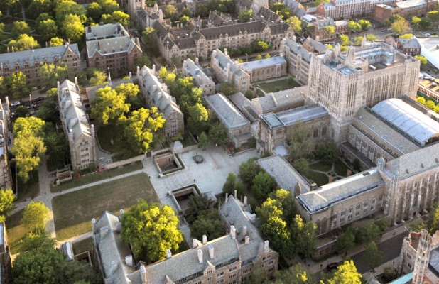

Yale is a school in New Haven, Connecticut, founded in 1701, and has a campus size of 342 acres in an urban setting. Yale utilizes a semester-based academic calendar. Its student-faculty ratio is 6:1 and 76.8% of its classes have fewer than 20 students. The top five majors at Yale are economics, political science, biology, history, and psychology. Yale has an active greek life, with a multitude of fraternities and sororities. The mascot at Yale is the bulldog. Famous alumni include George Bush Sr. and Jr., Bill Clinton, and Anderson Cooper.
